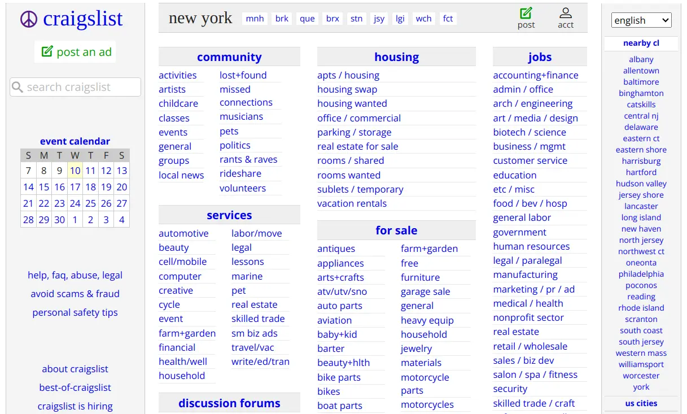
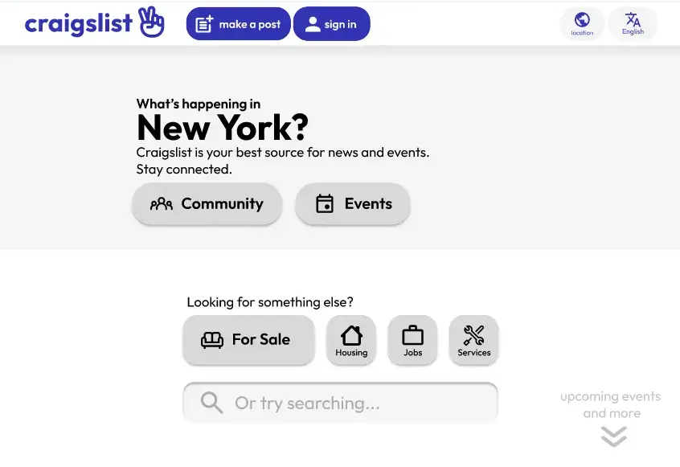

Projects
Oslofjord Digital Twin · Master's thesis, in progress
My master's thesis, currently in the early stages. I'm reading relevant literature and starting to narrow down a direction; likely something to do with data pipelines for environmental sensor data, but nothing is set in stone yet.
Revit Plugin for BIM Synchronization · Multiconsult, 2025
An internal plugin for Autodesk Revit handling BIM work synchronization, deployed to the company-wide toolbox and used across multiple construction planning projects. The work involved significant refactoring of an existing codebase, replacing browser-based authentication with an embedded WebView2 window, and a UI revamp in WPF/XAML.
Electrical Planning Tool · Multiconsult, bachelor project 2025
Backend for an internal web application used by discipline leaders to create structured system and component lists for electrical planning, following TFM/NS-3457 standards. Built 43 REST API endpoints in .NET/C# with a layered architecture, Entity Framework Core, and Azure SQL. Hosted on Azure with Microsoft Entra ID for authentication.
Parallelized Prime Sieve & Factorizer · UiO, spring 2026
Cache-friendly, multithreaded implementation of the Sieve of Eratosthenes and a prime factorization engine in Java. Optimized for parallel execution with attention to cache line utilization and thread workload distribution. Built as part of a graduate course in efficient parallel programming. (Repository currently private to avoid plagiarism.)
Craigslist Redesign · Figma prototype, 2023


An interactive prototype redesigning Craigslist's user experience with modern UX principles: cleaner navigation, accessible layout, and a new logo, while keeping the existing color scheme and core functionality. Try clicking around.
Simple RPG · PICO-8, 2021
A small RPG I made in Lua on the PICO-8 fantasy console before starting my CS degree. Move with arrow keys, X to see inventory.